Introduction
There is a growing need for entertainment systems, multi-media systems and networked computer applications to support audio in a more flexible manner than current technologies permit. In this chapter we describe the principles behind NetSound, an application that demonstrates the concept of structured audio in the context of interactive media and networked applications. NetSound uses Csound as a specification language for implementing structured-audio models and as such it constitutes an application of Csound with extended functionality. We shall first give an introduction to the fundamental concepts behind structured audio; these concepts are then defined by a family of mathematical groups called auditory groups, some properties of which we shall discuss. We then give an overview of NetSound and present examples of structured-audio music representation and sound-effects modeling.
We hope that this chapter will serve as an introduction to alternate ways of thinking about sound for computational media applications. It is also hoped that the sound-modeling applications described herein demonstrate that Csound has much potential as a useful tool for sound and music production in new-media applications.
Stream-based Audio Representation
The most widely used audio encoding technologies for new-media applications use a sampled audio bit-stream which is often compressed into a smaller bit-stream in order to reduce the bandwidth of the signal. Compression technologies use various measures on the audio data in order to determine those parts of a sound that need the most attention to detail and those parts that can be reduced without affecting the result. In the case of the MPEG layer 1 and 2 encoding schemes, a low-level psycho-acoustic model of hearing attempts to characterize the salient parts of a signal using critically-masked channel encoding. The MPEG channel encoding techniques are, then, perceptually-matched audio methods for stream-based representations. They do not, however, represent any content within the stream.
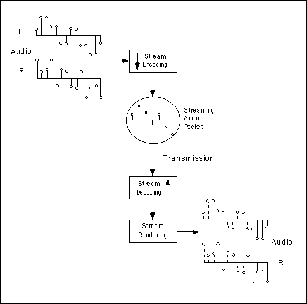
Figure 1. Streaming audio flow diagram. An audio source is compressed into a smaller representation using a stream encoder. Encoded streams must be decoded at the receiving end before being rendered.We use the word stream to draw attention to the fact that a bit-stream, even when compressed, is always a continuos array of time-locked audio samples which are decoded and rendered as a higher-bandwidth continuous array of audio samples. The bits are the message in a stream, hence there is no structure in the signal. The canonical stream-encoding/decoding flow diagram is shown here.
Structured Audio Representation
In contrast to a streaming audio packet, a structured audio packet comprises fundamental signal building blocks and a set of well-defined transformations upon these signals that can be executed in real-time to create an audio bit-stream. The representation encodes the fundamental elements for implementing various classes of sound, see Figure 2. This type of representation offers the related conveniences of controllability, scalability and compactness. In addition to these utilities, structured audio also raises the issue of computational complexity. We shall now briefly consider each of these issues.
Controllability
Structured audio representation is capable of generating audio
signals for the many possible states of an object, this is because
it is affords an object-based description of sound. For example,
sounds in a game may be controlled, at the time of game play,
to respond to changing materials in the artificial environment;
objects made from wood, glass and metal would respond differently
if either struck by a large metal sword or kicked over by a heavy
boot. These different sound actions are possible because structured
audio represents sounds by a combinatoric composition of object
properties such as large wooden object and small glass object,
and action properties such as kick, strike, bounce, scrape and
smash. We use auditory group elements and associated transformational
operators to create the various instantiations of objects and
actions.
The representation of sound elements is the main difference
between audio design using structured audio techniques and stream-based
techniques. In a structured audio representation, sounds are produced
by programs which are executed by an application. These programs
represent the potential high-level structures for a set of elemental
materials; for example the behaviors of bouncing and hitting a
ball are represented as different types of high-level structure,
iterated versus impact, but their low-level structures are the
same - an impact and a ball response. Furthermore, these high
and low level structures can be combined in novel ways in order
to produce new sounds.
Samples, or streams, generally offer little modification and control that can be used for the purposes of representing alternate physical states of an object. Structured audio, therefore, is in no way like a stream-based representation. There is a stronger relationship between the underlying physical properties of the modeled sound objects, hence their is control over the sound structure. This relationship is represented by elemental features in sound signals, that we call structural invariants, and modifications of these elemental structures, which is acheived by well-defined operators called transformational invariants.
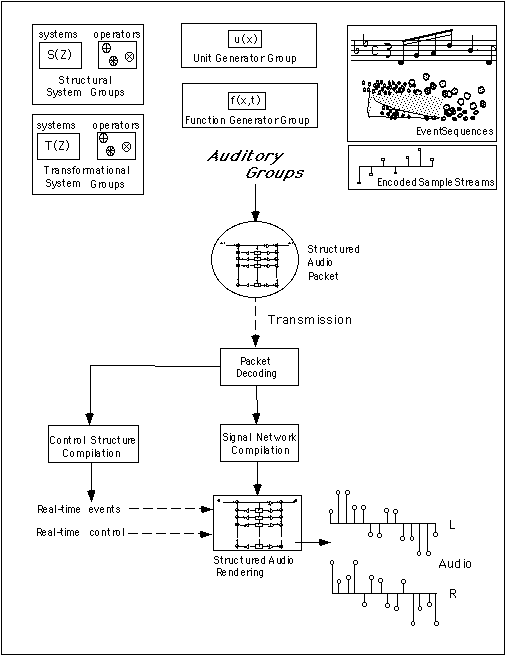
Figure 2. NetSound flow diagram. Structured audio sound events are represented using a combination of elementary building blocks called auditory groups. We can mathematically describe the representation of sound in this manner using auditory group theory; which defines how signals can interact with each other as well as how they can be transformed by various well-defined mathematical operators. Auditory group representations are transmitted as a structured-audio packet. This packet is decoded and compiled at the receiving end. Once compiled it is ready for rendering.
Scalability
Since structured audio representations render a bit-stream from a description of object properties, i.e. the data is represented as audio building blocks rather than explicit sound material, it is possible to specify different rendering configurations for the final sounding result. For example, a high-end playback machine may be capable of rendering full CD-quality stereo audio with effects processing, and a low-end playback machine may be capable of rendering only mono, sub CD-quality audio. Even though these renderings differ in their bandwidth, they are both produced from exactly the same structured audio representation. Thus scaleable rendering configurations are used to adjust the resolution of a structured-audio sound track to best fit a particular end-user hardware configuration and distinct multi-resolution audio formats are, thus, not required.
Compactness
Perhaps the most obvious advantage of structured audio representation
is its compactness. A structured audio packet is far more compact
than stream-based audio packet; in fact, very often it is several
orders of magnitude more compact over the equivalent generated
stream representation. The compactness of the representation stems
from the fact that the data represents the fundamentally most
important parts of sound structures. Very often this material
is a small collection of filters with very few coefficients and
a series of time-varying generator functions which create excitation
signals and transformations of the filter structures.
The compactness of the representation makes structured-audio a well-suited scheme for distributing audio data over low-bandwidth networks. This is the basic property that NetSound exploits in order to represent high-quality sound with a very small amount of data. The low-bandwidth data representation is useful for transporting sound over modems or low-density media such as floppy disks and for representing a large amount of data with limited resources; it is standard industry practice for a CD-ROM-based game to restrict audio soundtracks to, say, 15%-20% of the available data space. With such limitations, alternate methods to stream-based audio representation are being sought. Thus NetSound attempts to address these issues using Csound as a development and prototyping tool.
Computational Complexity
The balancing factor in stream-based versus structured audio representation is the issue of computational complexity. Whilst the computational cost of a streaming-audio packet can determined ahead of time by the encoding bandwidth, the complexity of a structured audio packet cannot be known fully in advance of the arrival of a particular event. In the special case where the event structure is locked-in ahead of time, by a MIDI file for example, we may be able to calculate the computational load of the file prior to rendering.
The computational overhead for a structured-audio system is contained both in the decoding of compressed audio waveform files, and in the rendering of the signal structures. The decoding-overhead element is due to stream-based sample representations which are allowable within the structured-audio framework. The rest of the overhead is contained in the computational structures; that is, in the allocation, initialization, control and signal-network computation that happens when a structured-audio event is initiated. For a stream-based audio packet all of the computational overhead is in the decoding of the audio signal. The rendering is minimal since the samples only need to be shuffled out to a digital-analog converter. Thus stream-based decoding can act as a kind of benchmark for structured audio rendering.
Overhead of this type must be analyzed in order to determine whether or not real-time structured rendering will be possible for a given application and hardware configuration. It is also useful to perform such an analysis for compiler optimization schemes, so that a sound rendering application might find the most compact and most efficient implementation of a given sound-structure representation. In order to construct such an analysis we must formalize the fundamental components of a structured-audio representation. We propose representing sound structures using a family of groups which are closely-related to the domain of linear signals and systems; we call these auditory groups and they are components of a new representation method for sound called auditory group theory.
Auditory Groups
Auditory groups can be thought of as a classification scheme for the various types of signals occurring within a sound structure, each of which has a different purpose and therefore different inherent signal properties. We structure our auditory materials in this manner for optimizing structured audio representations, and for the purpose identifying those parts of a structure that are general across a range of different instances of a sound. A simple example of the utility of the division into auditory groups is to think of a guitar, each of the six strings may either be excited separately by individual finger picking motions, or excited as a group by chord strumming. The locking of excitation structures in this manner affords optimizations which are not represented by treating each string as a separate instrument. So, by classifying the excitation combination possibilities, we can generate efficient rendering structures for complex sound events.
We will start by describing two general classes of auditory groups: the unit generator and function generator groups.
Unit Generators
Unit generators are already a familiar concept to readers of this book. What we formally mean by a unit generator, however, must be specified clearly. By a unit generator we mean a sequence generator or signal modifier that has a specific purpose; for example a noise generator, a periodic impulse generator or a filter. These functions take arguments, which are possibly time-varying, therefore we say that a unit generator is non-stationary.
Many years of computer-music and digital signal processing research has produced many mathematical algorithms that generate sound from a small number of parameters. Csound incorporates many of these techniques as opcodes; such as FM synthesis, fof synthesis and others described in this book. The advantage to these specification techniques is that they do not require much data storage. The sound is rendered entirely from a function which is passed parameters from the calling application, or from a score or MIDI file. As we shall see, many of the Csound unit generators can be used for modeling different components of a very wide range of sounds.
Function Generators
Function generators are similar to unit generators, but they may not change over time. These are considered fundamental functions which must be accessible to unit generators. A unit generator may alter the signal of a function generator, but a function generator cannot alter its own output signal, therefore we say that a function-generator is stationary. The unit generator and function generator groups can be used as spectral signals, excitation signals or transformational signals (parameters) in an auditory group representations. However, only unit generators may represent time-varying functions.
Encoded Sample Streams
Encoded sample streams are a special case of the function generator group. Samples are useful for many types of sound rendering. Much music synthesis utilizes samples in one way or another, and soundtracks may need to include clips of actors’ voices which are best represented as encoded samples. We could choose one of many sample encoding formats, but we should pick one that reduces the size of audio samples significantly, and without audible loss of quality, if we want to achieve a compact structured audio packet. NetSound supports MPEG layer-II encoded audio samples. They are decoded during the NetSound packet decoding process and converted to function generators upon signal network compilation in Csound.
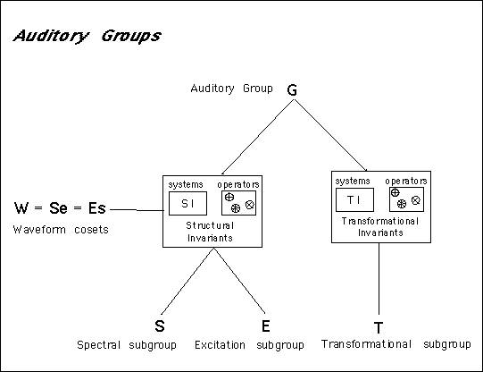
Figure 3. Auditory Groups. The various signal types used for structured audio representation can be mathematically classified using group-theoretic concepts such as a subgroup and a coset. Auditory groups are mathematically defined as normal subgroups of the domain of systems with rational system functions in the Z-plane. Auditory groups are useful for representing invariant properties of signal transforms for different elements within a sound structure.
Figure 3 shows the basic auditory group hierarchy. Not shown is the overlying group of Z-transforms of real-valued signals with well-defined inverses This group is therefore a subgroup of the complex domain; since Z-transforms of real-valued sequences have special symmetry properties, some of which are not exhibited by Z-transforms of complex-valued sequences.
Members of the group {S} are formant structures (spectral invariants), such as the broad spectral envelope of a single vowel, a musical instrument tone or the impulse response of a source object such as a large glass container. Members of the group {E} are excitation functions such as periodic impulse trains, steady-state noise sequences and self-sustained waveguide oscillator sections. Now, {T} are the set transformations of the invariant subgroups and they can be thought of as time-varying event structures such as bouncing, impacts, fractures, melodies, instrument articulation parameters and speech formant trajectories. The group {W} is generated by interactions between {S} and {E}, these are sound waveforms and they are not fundamental elements like {E}, {S} and {T}, but instead they are well-formed sound structures to be treated as audio output signals.
Structural Invariants
The main auditory group is divided into two subgroups. The first subgroup is the structural invariants group which encapsulates the elementary building blocks of sound signals. These are units such as formant structures and excitation sequences. In the case of musical instruments the formant structures remain stationary and the excitation sequences are subjected to various changes such as pitch shift and spectral envelope alterations. A formant does not make a sound until it is excited, and excitation signals do not in themselves represent a well-formed sound signal until coupled with a resonating formant structure. So it is the combination of {S} and {E} components that give rise to well-formed sound structures. These two types of signal are represented in the structural invariants subgroup as two further subgroups, spectral invariants {S}, and excitation invariants {E}. We use the word invariant to draw attention to the fact that these types of signal are considered a persistent component of a particular sound structure; indeed their transformation through time specifies the sound structure.
Spectral Invariants Group
Spectral invariants are sequences whose perceptual characteristic is a spectral envelope that can be shifted around in frequency and still retain the perceptual quality of an instance of a single type of sound. We call this property "timbral invariance". So spectral-invariant systems are those whose spectral envelope remains unchanged in shape under frequency shifts. Elements of this group exhibit what we call the timbre property. The timbre of a sound is preserved under a well-defined set of mathematical operations which are the operators of the spectral invariants group.
A spectral-invariant is represented in Csound using the new filter opcode. This opcode implements the filter structure shown in Figure 4. The filter is a transposed form-II digital lattice, and it is accessible for avar and kvar signals via the opcodes filter and kfilter respectively. For simple stationary formant structures, the filter coefficients are not permitted to change over time. Thus they are implemented using i-time variables in Csound.
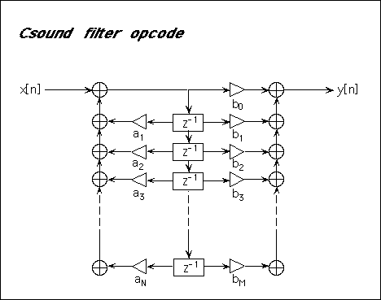
Figure 4. The Csound filter opcode implements a transposed form-II digital filter lattice. The number of pole coefficients (N) and the number of zero coefficients (M) must be specified along with their coefficient values.
Spectral Invariants Group Operators
Two special operators are defined for the spectral invariants group. These are called the radial shear and angular warp operators. These operators allow independent control over a spectral invariant’s time responses by radial pole-zero shearing, and control over the magnitude response by angular pole-zero warping. The resulting transformation maps to transformations of the physical properties of material type and source-object size of a spectral invariant feature. In brief, the materials from which an object is made determine the restoring forces under displacement and therefore specify the resonant time-response properties of a filter as well as the period of the fundamental mode. Also, source objects of different sizes can be modeled by warping the angular frequencies of the poles and zeros of their structural invariant system functions because linear dimension rescalings of acoustic systems result in constant factor shifts in the modes of vibration. The shear and warp operators are built into the zfilter opcode. The kmag and kfreq k-variables shift the poles and zeros of the digital filter radially and angularly as depicted in Figure 5 for a single-pole system function. Thus, zfilter is a time-varying filter implementation which operates on a static spectral-invariant filter structure. Whilst filter and kfilter are extremely general in the types of systems they can represent, zfilter is useful only for systems for which the warp and shear transformations produce a desired result. Thus we say that zfilter implements the operators of the spectral invariants group.
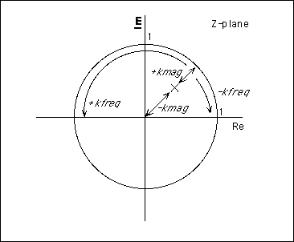
Figure 5. Pole Shear and Warp operators. The figure shows the action of the zfilter kmag and kfreq control variables on a single pole represented in the complex plane. The variable kmag shears the poles along radial lines between 0 and 1, and kfreq warps the poles along an angular path between zero and ?. These operations on the poles and zeros of a structural invariant produce timbral-shift and time-response effects in the resulting sounds.
In order to maintain the stability of the digital filter, the operators in zfilter scale the poles relative to the largest-magnitude pole such that all the poles are inside the unit circle after transformation. Similarly, the angular shift of poles preserves a logarithmic relationship between the frequencies of the peak magnitudes the spectrum, but the highest-frequency complex pole remains at an angle below ? and the lowest frequency complex pole remains above zero. (The frequency warping operator maps ? and 0 to themselves).
The effect of scaling the poles and zeros in this way allows pitch shifts of resonator structures to be implemented in a perceptually-plausible manner. The resulting spectral invariants retain their timbral qualities after frequency warping and time-response alterations. The use of spectral invariants in this manner allows for the re-purposing of various spectral materials in order to make new instances of a given class of sound.
Violin resonance filters are spectral invariants, since they remain untransformed for most of the excitation states of a violin. In order to affect the timbre, a frequency-warping function can be applied to the violin filter which preserves the overall spectral envelope of the violin filter but shifts it to higher or lower regions of frequency space. Composer Paul Lansky used this type of transform to create a computer-generated string quartet from data recorded for a single violin melody for his computer music piece Pine Ridge. The violin resonance was modeled with a set of time-varying all-pole filters which were transformed by a frequency warp operator. The choice of frequency-warp operator was a bi-linear transform of the frequency axis which affects both the magnitude and radian frequency of each pole. The zfilter operator affects shear and warp independently of each other, thus giving more precise control over a spectral invariant.
Excitation Invariants
The time-domain compliments of the frequency warp and shear operators are the time-stretch and damping-constant operators. It makes sense to think of these operations in the time domain when considering signals whose role is to be primarily temporal. This is the case for excitation sequences; whose periodic properties, for example, are best observed in the time domain using auto-correlation based techniques. The time-domain operators are, however, exactly analogous to their frequency-domain counterparts, we just think of them in a different domain by their time-frequency equivalence relations. Excitation signals are temporally oriented which is in contrast to spectral invariant systems which are spectrally oriented. Because excitation signals take on persistent general forms, such as impulse trains and noise functions, which are subsequently modified to reflect changes in sound structure, we consider them as invariants. The sense of invariance is much the same as that of spectral invariants which are also considered to take on generally persistent forms such as the bore response of a musical instrument or the formant arrangement of a particular speech vowel. Sound structures are generated by transforming excitation and spectral invariants using the transformational operations defined for each of their groups. This allows us to model very general classes of sound generating systems as a collection of persistent and changing structural components. The level of description is independent and abstracted from the level of implementation. We can imagine that there are many ways of generating a periodic driving signal at a particular frequency, but what is important from the point of view of structure is its form, not the particular method that generates the form.
Excitation sequences are signals that are used to drive resonating systems. Examples are periodic impulse sequences, noise sequences and one-dimensional waveguide systems. Some items of interest regarding excitation signals, as with other primitive subgroups, is that they can combine with each other to form new excitation signals, they combine with transformational group elements to form higher-order excitation sequences, and they combine with spectral-invariant group elements to form non-primitive auditory groups, {W}; i.e. sounds with a well-formed source/excitation structure, see Figure 6.
Unit generators are very useful for generating excitation signals. For example, they are often used as the source component of source/filter audio models. An example of a unit generator excitation signal is the Csound buzz opcode which is used for speech source/filter models when used in conjunction with time-varying LPC analysis filters; which are themselves members of the spectral invariants subgroup.
Transformational Invariants
The transformational invariants group comprises operators that transform primitive structural invariant elements in well-defined ways. The transformations are defined by their symmetry properties. Those transformations which leave a particular structural component intact are considered symmetry preserving whilst those that alter a structural component are called symmetry-breaking transformations. The transformations are invariant because they always produce the same style of change for a particular signal group, no matter what the sound.
Transformational group elements operate on a larger time-scale than those characterized by the structural invariants group. Transformational systems are used to characterize structural changes such as pitch changes, vibrato, scattered onsets and time-varying excitation parameters. Take, for example, the diverse classes of sound such as breaking and bouncing events, formant transitions for speech, and textures comprising many individual particles. The time-scale of the transformation groups makes them particularly amenable to k-time implementation in Csound, which also makes for efficient rendering structures.
The systems in this group are useful for modeling environmental sound and various classes of Foley sound effects, such as door slams and footsteps. These sounds have not been well represented by traditional approaches to synthetic sound modeling. The transformational groups give us a means by which primitive auditory elements can be coerced into higher-order behaviors. Transformational invariants are the key to audio re-purposing by combining various well-defined higher-order transformational event structures with lower-level structural invariants in order to make novel sounds.
The various combinations of signal groups and transformations that are defined by the auditory groups lead to a well-defined, hierarchical representation of sound events that can be used for structured audio representation. The interactions of elements within each of the groups leads to higher-order instances of elements in that group. The interactions between groups leads to either higher-level elementary structures or well-formed auditory waveforms; the latter of which is the output of a structured audio system and therefore a non-elementary signal from the point of view of auditory group theory.
Auditory Group Theory
Auditory group theory is a group-theoretic organization of fundamental systems-level building blocks for structured audio representations. We shall not go too far into the mathematical details here. We shall, however, introduce a little of the theory on how each group can interact with the others. This mathematical organization of auditory materials leads to a simple and elegant way in which to represent complex auditory event structures and allows us to find general forms for audio algorithms which can represent diverse sound-event structures.
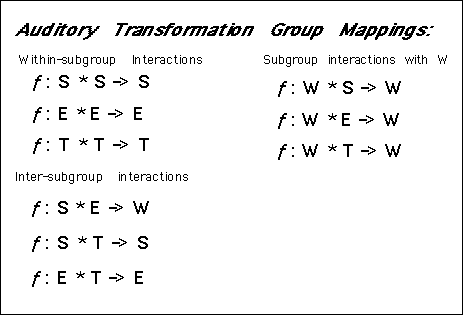
Figure 6. Auditory Group Transformations. The operator maps [ƒ:A * B -> C] represent the group membership of the result of an associative binary map, ƒ, upon its elements. Notice that the product maps its elements to different groups under different group interactions, these interactions create the various symmetry properties of the auditory groups.
The following points are worth noting about the auditory group representation. The first major structural feature of this group is the fact that each of the lowest level groups forms an automorphism. That is, the binary operations shown map transforms between members of a particular group back into the same group. Thus there is the notion of group closure for each of the auditory subgroups. What this translates to, for example, is that the result of multiplying a spectral invariant with another spectral invariant is again a spectral invariant; i.e. the product of two formant structures yields a third composite formant structure. The same applies to excitation signals and again to transformational signals, but this group closure does not apply to interactions across the groups.
This leads us to a significant point about this representation. In order for a primitive element from one of the subgroups {S}, {E} or {T} to be transformed to a non-primitive {W} element it must combine across group boundaries of {S} and {E}. This is a well defined mathematical concept and falls under the theory of cosets and what is known as Lagrange’s theorem. {W} is generated by the cosets of {E} and {S}, and we call it the waveform group. Because cosets are normal subgroups a fundamental property of the waveform group can be written as:
T{W} = T{SE} = T{S}T{E} [1]
where T{W} denotes some transformation of {W}. Lets say the
transformation defines a pitch shift of a sampled bowed-violin
sound. What this result tells us is that transformations of {W}
are really transformations of the product of an underlying {S}
and {E}, the violin resonances and bowed-string excitation function.
It is of note that such a compound transformation essentially
couples the underlying invariant properties of the waveform.
We can see the consequences of this if we consider the tape
transform. The tape transform is the process of raising or
lowering the pitch of a waveform by changing the playback speed
of a sound; it can be implemented by re-sampling the original
waveform. We formally represent the tape transform by:
Tape Transform = T1{W} = T1{SE} [2]
This tells us that the tape transform produces transformations in both {S} and {E} simultaneously. We see this by expanding {W} into its component parts and using the group transform relation of Equation [1]:
T1{SE} = T1{S}T1{E} [3]
Now, the transformation T1{E} produces a shift in the perceived
fundamental pitch and harmonic structure of the excitation invariant,
and T1{S} produces the same shift in the spectral invariant of
the sound. The first transformation produces the intended pitch
shift, but the second transformation produces the munchkin effect,
an effect used by cartoon makers to create animated creature sounds.
Therefore, in order for perceived pitch to change independently
of perceived timbre, distinct transforms must be applied separately
to the {S} and {E} group constituents of a sound structure.
We now consider such a transform, called the structured
transform, which is an independent transform of the invariant
constituents of W. Let us define:
Structured Transform = U{W} = T1{S}T2{E}. [4]
U{W} produces independent changes in {S} and {E} using two
different transformations. So, for example, it is possible to
transform the bowing function without transforming the resonance
structure of the violin. There is, however, the possibly a non-linear
coupling between {S} and {E} so we may think of two independent
transforms, one which primarily affects {S} and the other that
primarily affects {E}, but which may be coupled due to non-linear
terms. We speak of a system as having the structured symmetry
property if the relation expressed by U{W} holds for T1?T2. In
the case that T1=T2 then U{W} = T1{W} and the structured transform
collapses to the tape transform. The structured symmetry property
is one of the fundamental requirements for auditory group transforms,
and it is used to mathematically define the requirements of structured
audio algorithms and representations.
Thus the above equation defining U{W} is a structured audio transformation because it affects {S} and {E} separately and distinctly. Tape transforms are considered an auditory group but they do not have the structured symmetry property. We shall not expand on the deeper implications of this mathematical representation in this chapter. We shall suffice in recognizing that auditory group theory represents the fundamental elements of a structured audio representation and that some powerful observations, on the nature of structured audio representation, are possible using these group concepts. With these auditory groups we can now consider structured audio representation as it is implemented in NetSound.
NetSound
NetSound implements the concepts outlined above in the context
of networked sound and music applications. NetSound was originally
designed to efficiently transport high-quality music across the
World Wide Web so that Web pages could easily have soundtracks.
Since implementing the initial version of NetSound it was found
that the representation of audio in this manner was very appropriate
for any application which requires structured audio representations.
Figure 2 shows the canonical structured-audio transmission flow
diagram.
For the purposes of low-bandwidth data connections, the speed
of the download depends on the size of the .nsd file which, in
turn, depends on the data requirements of the structured audio
algorithms. If a piece uses relatively few samples, and does not
require large amounts of support data, the NetSound file will
be very small. However, the size efficiency of the NetSound file
has to be balanced against the computational load of the structured
rendering. In general, the more sample-based sounds, the more
efficient the rendering and, therefore, the more simultaneous
sounds that are possible. But this makes the .nsd file larger
so the file takes more transmission bandwidth and it adds decoding
computations to the rendering overhead. The trade-off between
controllable specification and efficiency is part of the art of
producing sound materials using structured audio representations.
In the first example the tradeoff was balanced in favor of the use of sample-based sound transformations in order to represent a musical structure. The balance was about half waveform-based and half structured-audio representation. The second more complicated example demonstrates that the structured-symmetry property is essential to representing the structure of natural sound events such as breaking and bouncing events.
NetSound Examples:
Electronic Music Representation (manipulator.nsd)
Most of the music that is generated for commercial consumption
today is created with the help of computer programs. Take, for
example, contemporary dance music; the pieces are generated from
a highly structured representation using a sequencer and various
synthesizers and samplers. The final product is created by generating
a high-quality mix-down of the piece in a professional studio
setting. One way that we can see structured audio benefiting the
production of such music is in the representation and distribution
of the music. Instead of rendering all the information held in
a sequencer into bits, we can represent this information using
auditory groups. Then the group structures could then be transmitted
instead of the audio bits thus giving all the benefits of a structured
audio representation.
In order to do this we assemble all the data files and signal
processing structures that are needed to render the piece and
pack them into a single file called a NetSound packet (or .nsd
file). An electronic beat-oriented piece occupies less than 150Kbytes
in the reduced representation, yet it is capable of producing
many minutes of CD-quality stereo music; the resulting data compaction
is typically on the orders of 100:1 to 1000:1. Since the music
is held in a structured representation, the materials could be
recycled and re-purposed for other audio-based applications, such
as video games or ambient music generator programs.
The first NetSound example, manipulator.nsd, is an example of a structured audio representation of a piece of beat-oriented music. It uses high-quality produced drum-beat samples which are subjected to various transformations throughout the piece as well as a funk-guitar lick, an amplitude-modulated metallic-sound with sweeping filter, a waveguide bass guitar and an acid-bass analog synthesizer emulation. With MPEG encoding of the drum samples and guitar lick the resulting .nsd file occupies about 150K of data. Figure 7 Shows the Csound orchestra header block.
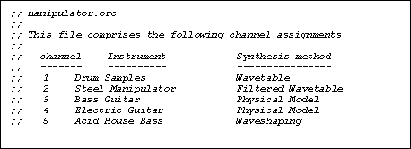
Figure 7. Csound manipulator.orc header. This file defines the Csound instruments for the piece. There are five different instruments defined for the piece, each can represent several different sounds having similar transformation structures.
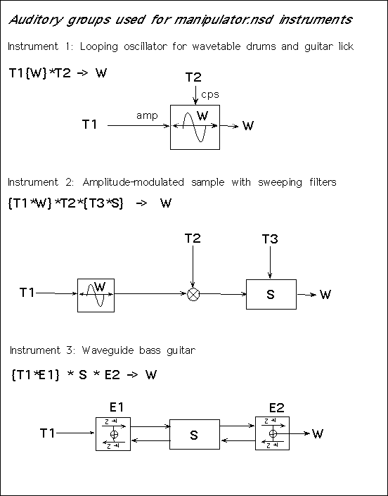
Figure 8. Manipulator-Piece Auditory Groups. The
figure shows auditory group representations and systems-level
diagrams of the first three instruments of the orchestra of manipulator.nsd.
The groups describe which elements of the rendering structure
have structured symmetry properties and therefore can be transformed
in structurally useful ways.
Figure 8 shows the auditory groups which comprise the structures
of each of the instruments in this piece. At the right-hand side
of the figures is the resulting audio waveform, which is in the
subgroup W. Instrument 1 is a looping wavetable oscillator pitch
and amplitude functions. The looping oscillator is a member of
the tape transform group, T1{W}, since the encapsulated sampled
sound is not structured into {S} and {E} components. The essential
Csound code for instrument 1 is shown in Figure 9. The sound waveforms
are selected from a lookup table which indexes a set of function
generators containing the waveforms.
Instrument 2 is also a looping wavetable oscillator, but now
we have further transformation by a spectral invariant structure.
This is a time-varying bandpass filter with a constant bandwidth
and time-varying center frequency. The Csound code for instrument
2 is shown in Figure 10. Again, this instrument is relatively
straight forward, it is essentially a tape transform modified
by a spectral invariant structure.
The third instrument is a waveguide guitar, the waveguide sections
belong to the excitation group {E} and the guitar bridge and body
filters are a spectral invariant systems, {S}. This instrument
is an example of a structured-auditory group representation since
the components of the sound are represented as separable {E} and
{S} components and the transformations of the waveguide network
exhibit the structured symmetry property. The essential Csound
code for the waveguide bass guitar instrument is given in Figure
11.
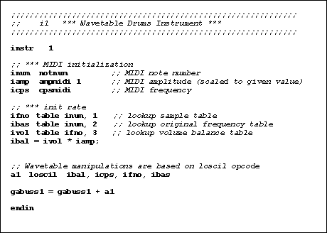
Figure 9. Wavetable Instrument: This instrument is based
on loscil, it transforms waveforms, {W}, into other
waveforms using a tape transform implemented by loscil.
The waveforms are selected by MIDI note number which indexes into
a table of wavetable function generators.
The auditory group representations of Figure 8 tell us which
parts of the audio structure can be transformed in what ways in
order to leave some elemental component unaffected and others
changed. We cannot apply a transformation to a looping wave-table
oscillator (such as Csound’s loscil) and expect it to behave
as a structural invariant transformation. This operation is only
defined as having the structured symmetry property if the components
are {S} and {E} are seperable and distinct auditory groups.
The sampled sounds that are manipulated by loscil are
well-formed auditory waveforms, {W}, and cannot be decomposed
further into their component structural groups. This is the reason
why voice samples when transposed upwards out of their normal
range exhibit the notorious "munchkin" effect. It is
due to the coupling of excitation and formant structures in {W}-group
members. Therefore, it is necessary to retain as much invariance
structure as possible when requiring detailed control over sound
synthesis. It is the recognition of such properties within a sound
structure that makes the use of auditory groups beneficial for
understanding the behavior of different sound transformation algorithms
in a complex audio synthesis network.
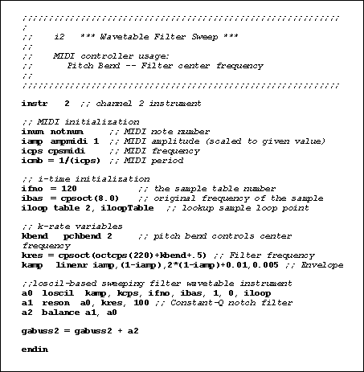
Figure 10. Sweeping-Filter Wavetable Instrument: This
instrument is also an example of a tape transform. In addition
the output of loscil is passed through a sweeping filter
operation.
The representation of complex structured audio events becomes
more important when we move away from the familiar territory of
musical instrument modeling and venture into structured-audio
algorithm design for sound effects. Aside from the inclusion of
noise structures and complex time-varying spectra, there is the
additional complexity of higher-order structure within the sound.
Consider, for example, the sound of a creaky door; it is the iteration
of many small door-creak sounds that create the overall sound
of a large creaky door opening. There is no single sound structure,
it is a higher-order sound structure and this must be captured
for effective sound modeling of environmental audio events such
as those often used by sound effects artists. This type of natural
sound modeling is the subject of the next section.
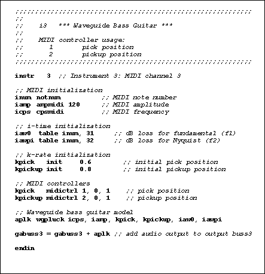
Figure 11. Waveguide Bass Guitar: This instrument is an example of a structured-property auditory group, transformations of waveguides allow independent control of excitation signals and resonant filter structures. Thus this instrument is an example of a well-formed structured audio representation.
Feature-based Modeling
A new research direction in sound and music synthesis is the
use of feature-based synthesis techniques. A sound feature is
an element of a sound which can be separated out and controlled
separately from other parts of the sound. In terms of auditory
groups we consider a sound element to fit into either of the structural
invariant groups {S} or {E}. For example, a footstep contains
the excitation features of the heel and toes clicking and the
acoustic response features of the material which is being walked
upon, such as wood or concrete. The former features are members
of the group {E} and the latter features are members of {S}. Another
example is a breaking glass which contains an impact noise burst
and many smaller shards which are, essentially, individual impact
events in their own right; each individually comprising {S} and
{E} components that are controlled by operations from the group
{T}.
It is possible, using statistical basis estimation techniques,
to extract spectral and temporal features from real sounds. Consider
the sound of a glass smashing; although this is clearly a complex
sound there are certain invariant structures within the sound;
such as glass particles, and decaying noise. These can be analyzed
using a new analysis technique called spectral independent
component analysis which decomposes a time-frequency distribution
(such as a short-time Fourier transform) into a set of orthogonal,
statistically-independent basis functions. The technique is related
to principal component analysis but uses a higher-order statistical
measure on the data to determine which are the statistically-independent
features in a linear superposition of different sound spectra.
These statistically-independent components correspond directly
to structural invariants in the auditory group representation.
The invariants allows us to represent natural sound effects using
auditory groups, and to synthesize many instances of a particular
type of sound by transformations of the auditory group invariants.
The resulting syntheses are intuitively controllable because the
transformations are defined as having well-formed symmetry relations
for each auditory group, and these symmetry relations are related
to physical properties in the underlying events such as the size,
shape and materials of objects.
The NetSound examples smashing.nsd, bouncing.nsd and
other sound-effects models were created using these techniques.
Various different smashing sounds are synthesized by controlling
the spectral invariants and excitation signals via transformational
groups. All of the elements used in the following examples were
analyzed from samples taken from a commercial sound-effects library.
The analysis was performed using independent component analysis.
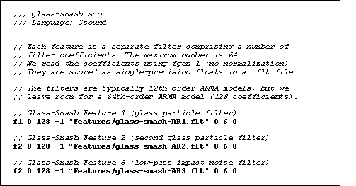
Figure 12. Auditory Group Invariants: In feature-based
modeling, the independent features of a sound are represented
by filters. The coefficients of the filters are stored as .flt
files in NetSound packets. The coefficients are loaded into tables
for access by the filter structures in the corresponding orchestra
file.
Feature-based synthesis offers the promise of efficient sound
re-synthesis with complete control over the important perceptual
components of a sound so that it can be made to respond to the
action in an interactive application, such as a virtual environment,
in intuitive and meaningful ways. The sound-effect examples presented
in this section are just a few of the various new types of new
synthesis models that can be created using auditory group representations.
In order to specify a structured feature-based description of a sound effect we must first analyze the features of a real sound, or obtain filters from a feature-based sound library. These features are spectral invariants and they are represented in Csound as digital filter coefficients. Each feature of a model is loaded as a separate digital filter using the function table generator for loading values from a file, see Figure 12.
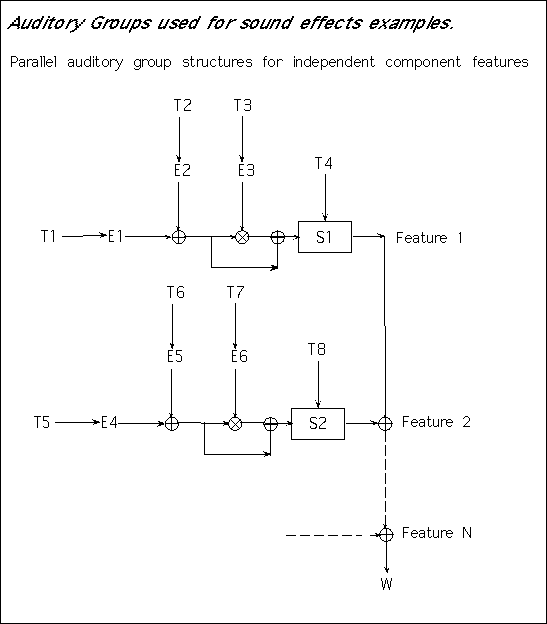
Figure 13. Sound Effects Modeling Auditory Groups. The
system structures shown in this figure are those use to implement
sound effects using auditory event groups. A set of structural
and transformational invariants are analyzed from sound-effects
recordings and these are used to obtain filters for spectral invariants.
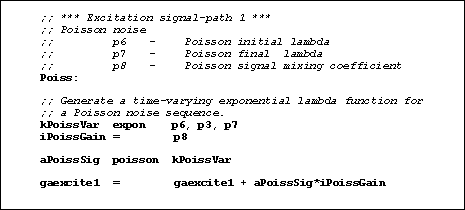
Figure 14. Poisson Noise Excitations: The Poisson
unit generator is used as a component of a feature excitation
signal. Poisson noise is extremely useful for modeling natural
sound-event sequences such as the random distribution of shot
noises or impacts. For example, we represent the scattering of
particles in an impact as a decaying Poisson sequence.
In order to create a realistic sound effect, an appropriate
excitation sequence for the event must be generated. The form
of the excitation sequence will depend on the type of sound. Basically,
the excitatoin structure of many natural sounds can be characterized
as a mixture of simple excitation behaviors such as various types
of noise, and impulses. These excitation sources are structured
in time to reflect the higher order structure of the sound event,
such as decaying randomized onset times, as in breaking events,
or decaying impulse amplitudes and delta-time iterations, as in
bouncing events. The excitation signals are expressed as a linear
combination of excitation group signals {E}, which are each transformed
by separate transformation functions {T} during the course of
an event.
The first excitation signal path is that of a Poisson sequence.
These sequences are used for generating scattering events, breaking,
smashing, spilling, where the scattering parameter decays over
time. The poisson opcode implements a Poisson sequence
generator which is parameterized by a single stochastic time variable
called lambda. This variables determines the rate of generation
of stochastically scattered onsets. Figure 14 Shows the Csound
code for a time-varying Poisson noise generator.
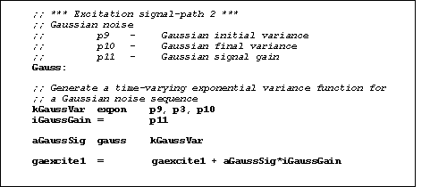
Figure 15. Gaussian Noise Excitations: The gauss
unit generator is used to produce a time-varying Gaussian noise
component in an excitation signal. Gaussian sequences are useful
for generating impact noise in natural sound events, or for generating
noise bands for other classes of natural sound such as insects,
wind and rain.
The second type of excitation signal commonly used for natural
sounds is a Gaussian noise sequence. As with the Poisson sequence,
the Gaussian parameter is a function of time, so the noise variance
can be made to change during the course of an event. Both of these
excitation paths are used for generating breaking and smashing
sounds. It is important to note that these excitation noise classes
are very general and can be used to create scraping sounds, wind
sounds, rain sounds, and many other classes whose excitation structure
warrants the use of time-varying noise sequences. The Csound code
corresponding to the Gaussian excitation signal path is shown
in Figure 15.
The third common excitation behavior is that of iterated impulses.
Many common sound-structure event sequences fit into this class.
For example, the sounds of footsteps and hammering can be generated
from an excitation sequences comprising regularly-spaced impulses
combined with appropriate footstep or hammering feature filters.
By utilizing the exponential decay functions we can generate impulse
patterns corresponding to bouncing events. This is, in fact, how
the bouncing particle examples in NetSound work.
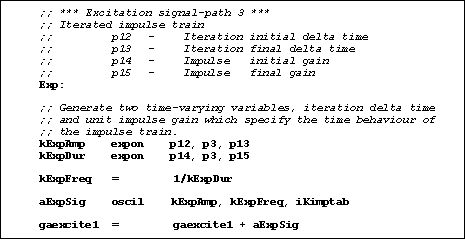
Figure 16. Iterated Sequence Generators: Iterations
are parameterized by two exponential functions. One that controls
the spacing between iterations, and another that controls the
amplitude of the iterations over the duration of the event. Excitation
signals of this type can be used for generating bouncing events,
iterated events such as footsteps or hammering, and pulsed events
such as a creaky door opening.
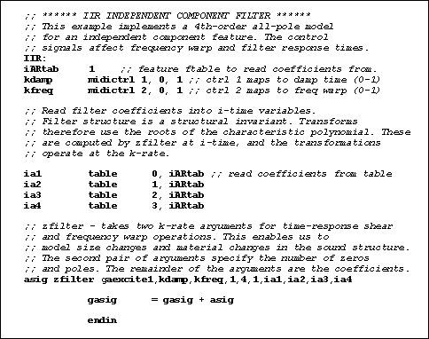
Figure 17. Spectral Invariant Filters: each independent
feature in a sound is represented as a filter which can be controlled
by two parameters, kdamp and kfreq. The filter coefficients are
read from ftables which are created in the corresponding score
file. The excitation function is generated by the various excitation
signal paths outlined in the preceding figures. The result is
a well-formed sound waveform which is recognizable as some type
of sound event such as glass breaking or bouncing.
The mixed excitation signals for each independent feature are
filtered by the spectral invariant filter of that feature. The
Csound filtering implementation is shown in Figure 17. Each feature
gets a different filter table, which provides a unique set of
filter coefficients. Each feature’s excitation signal is
generated from a combination of excitation signal paths as shown
in Figures 14-16. Figure 13 shows the general form of the auditory
group representation for sound-effects modeling. The excitation
signals are transformed, by Tx{E}, separately from the spectral
invariant filters, Ty{S}, such that each excitation path is independently
controlled as is each spectral invariant component. This structure
allows the specification of many different types of sound events
from a single auditory group model. This is where the useful structure
of a sound model resides. For example, in a set of glass features
such as those shown, the excitation signal paths can be used to
generate breaking and bouncing events for many types of glass
object. By application of thezfilter operations the glass
particles can be made to resemble different materials, such as
metal and wood- by pole shearing, and different configurations
such as larger and smaller- by pole-warping. Essentially, once
the form of the structure of a sound has been captured as an auditory
group, it is easy to modify the sound for generating alternate
sound-event structures.
Figure 18 shows the implementation of a filter structure used
by the feature-based synthesis techniques in NetSound. Thefilter
opcodes provide a means by which very general signal processing
techniques can be combined with unit generator and function generator
groups in order to model complex sound events. By careful consideration
of the role of each signal component in the sound structure, as
defined by auditory groups, we can create general-purpose sound-rendering
algorithms that are capable of representing a much broader range
of sound signals than have generally been considered for computer
sound synthesis applications.
In this section it is hoped that we have demonstrated NetSound
as good example of using Csound as a general-purpose sound-specification
language as well as an audio rendering engine. We have been able
to represent sound structures as diverse as beat-oriented music
pieces, and Foley-type sound effects as well as create efficient
implementations of these for real-time synthesis applications.
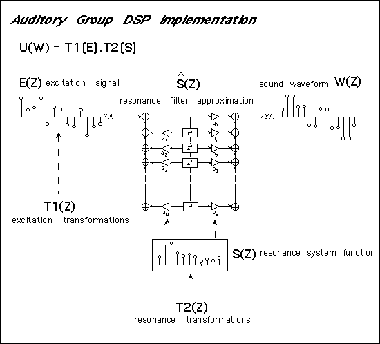
Figure 18. Feature-based synthesis implementation. The
figure shows the essential discrete-time signal processing elements
of a feature-based synthesis implementation. On the left is an
excitation invariant, transformed by a function T1, in the middle
is a spectral invariant transformed by T2. The spectral invariant
is approximated by a digital filter lattice structure. T2{S(Z)}
affects the poles and zeros of the digital filter lattice. Both
the system function representation and digital filter representation
for the spectral invariant are shown; they represent the same
spectral invariant S(Z).
Conclusion
In this chapter we have introduced the concept of structured
audio representation for implementing audio for interactive applications.
Fundamental differences between stream-based approaches and structured
representation were discussed and we have shown that stream-based
representations could be contained within structured representations,
but the reverse is not true.
A new group-theoretic method for the formal representation
and analysis of structured audio systems was presented and we
demonstrated some fundamental properties of the groups. The most
important notion in this representation is that of invariants,
the auditory groups encapsulate auditory invariance properties
by strict mathematical relations, the advantage of this representation
is a rigorous and well-defined understanding of how auditory building
blocks can be combined and still leave various fundamental properties
unchanged, such as timbre, material properties or shape properties
of sound objects. Far from being arbitrary it is considered that
these groups are fundamental to representing controllable audio
structures and that the group properties are related to physical
symmetry properties in the underlying sounds, and therefore to
the salient perceptual properties of the sound structures.
Finally, we discussed a prototype application, called NetSound,
that implements structured audio sound transmission over low-bandwidth
networks using auditory group models. The auditory group components
are represented as Csound instruments with the addition of some
extended opcodes for generalized filtering operations. We believe
that NetSound has succeeded in demonstrating a broad range of
application areas for audio-synthesis specification languages
by formalizing sound structures using auditory groups. The domain
of application embodied by auditory group theory extends beyond
the reaches of computer music research and into other audio domains
such as sound for virtual reality systems, auditory displays and
sound effects rendering for automatic Foley systems and interactive
game soundtracks.
We believe that, within a few years, the basic techniques presented
herein will become commonplace as the needs of multi-media and
interactive applications make new audio representations and technologies
necessary. It remains to be seen which new methods of representation
will be implemented in order to stay abreast with the demands
of the new media, but any new representation of sound must be
sensitive to the inherent symmetries in the internal, natural
structure of sound events.
This chapter has only scratched the surface of many of the
issues associated with structured audio representation and formalization
techniques. For a more detailed account of the mathematical background
of auditory groups, as well as feature-extraction algorithms and
efficient signal processing implementations see:
Casey, Michael A., Auditory Group Theory with Applications to Statistical Basis Methods for Structured Audio, MIT Media Lab, Ph.D. Thesis, October 1997.